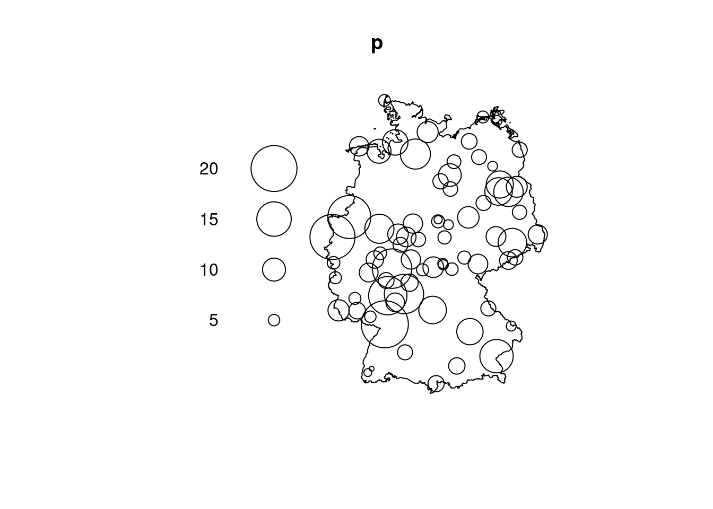

# how to get open circles? use geom_point():p =as.data.frame(st_coordinates(pts))ggplot() +geom_sf(data = box) +geom_point(aes(x = X, y = Y), data = p, shape =1, size =10* marks /max(marks))
Exercise 11.2
Convert the sample locations of the NO\(_2\) data used in Chapter 12 to a ppp object, with a proper window.
library(tidyverse) |>suppressPackageStartupMessages()no2 <-read_csv(system.file("external/no2.csv", package ="gstat"), show_col_types =FALSE)library(sf)crs <-st_crs("EPSG:32632")st_as_sf(no2, crs ="OGC:CRS84", coords =c("station_longitude_deg", "station_latitude_deg")) |>st_transform(crs) -> no2.sf# read_sf("data/de_nuts1.gpkg") |> st_transform(crs) -> de"https://github.com/edzer/sdsr/raw/main/data/de_nuts1.gpkg"|>read_sf() |>st_transform(crs) -> de# create an observation window sf object that contains the same mark:win =st_sf(NO2 =NA, geometry =st_union(st_geometry(de)))rbind(win, no2.sf[,"NO2"]) |>as.ppp() -> pplot(p)

Alternatively, the ppp object can be created stepwise:
st_union(st_geometry(de)) |>as.owin() -> wst_geometry(no2.sf) |>as.ppp(W = w) -> p # requires sf 1.0-9marks(p) = no2.sf$NO2p# Marked planar point pattern: 74 points# marks are numeric, of storage type 'double'# window: polygonal boundary# enclosing rectangle: [280741.3, 921330.5] x [5235822, 6101239] # units
Exercise 11.3
Compute and plot the density of the NO\(_2\) dataset, import the density as a stars object and compute the volume under the surface.